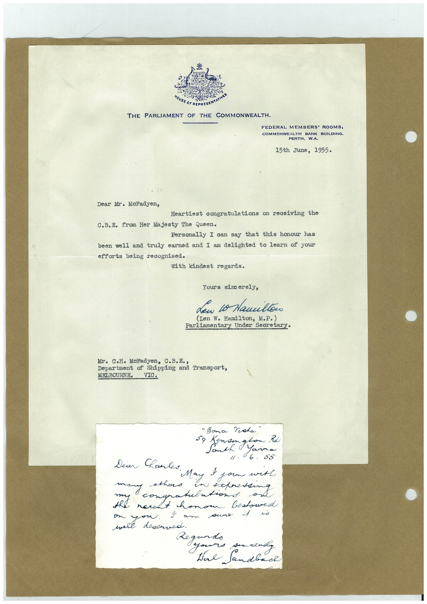

Book 1 · scan 099


Description
Transcription
Context
Review notes
Compare the machine draft with the scan. Handwriting and names need human review.
Artifacts
Edit the artifacts field in this note’s frontmatter to change these records. This summary is generated.
B01-S099-A01 — Letter & Handwritten note — Book 1, scan 099
Types: Typed document, Letter, Handwritten note
Scope: Whole scanned page; individual items can be split out during review.
Caption: Not mapped yet.
Caption source: Not recorded yet.
Caption status: unmapped
Machine transcription
MOUSE OF REPRESE THE PARLIAMENT OF THE COMMONWEALTH. FEDERAL MEMBERS' ROOMS, COMMONWEALTH BANK BUILDING. PERTH, W.A. 15th June, 1955. Dear Mr. McFadyen, Heartiest congratulations on receiving the C.B.E. from Her Majesty The Queen. Personally I can say that this honour has been well and truly earned and I am delighted to learn of your efforts being recognised. With kindest regards. Yours sincerely, den o Namiltoo (Len W. Hamilton, M.P.) Parliamentary Under Secretary• Mr. C.H. McFadyen, C.B.E., Department of Shipping and Transport, MELBOURNE. VIC. "Bona Vota" 59 mangland /1. 6. 53 many athers in expressing congratulations the necent honor bestowed were dese Tam sure i • deserved. Regard. yours ser clady Ware Sandbach